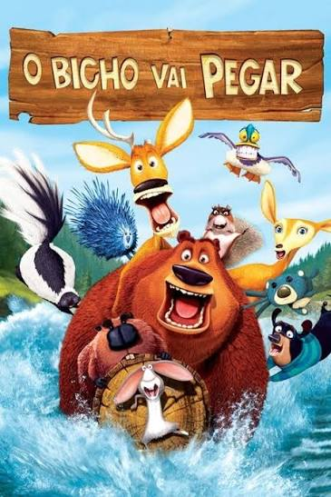
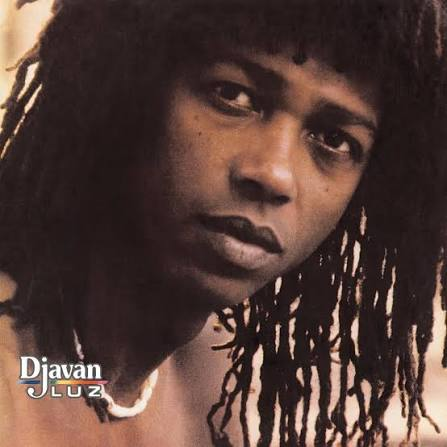

O Bicho Vai PegarBoog, um urso domesticado, acaba perdido na floresta durante a temporada de caça. Ao lado de Elliot, um cervo falante e atrapalhado, vive uma aventura cheia de confusões, humor e novas amizades.
MentalistaA série acompanha Patrick Jane, um homem extremamente observador e inteligente que utiliza suas habilidades de percepção e leitura de comportamento para ajudar a polícia a solucionar crimes. Enquanto investiga diferentes casos, ele também busca descobrir quem assassinou sua família. É uma mistura de mistério, investigação, suspense e inteligência.

SamuraiUma canção que mistura romantismo, poesia e intensidade. Fala sobre um amor profundo, cheio de sentimentos e entrega, com uma melodia marcante e envolvente.
Gostosas Também ChoramUm podcast que aborda relacionamentos, autoestima, sentimentos, inseguranças e experiências da vida real, mostrando que até mulheres confiantes e poderosas têm seus momentos de vulnerabilidade.
Um jogo de simulação em que você cria personagens, monta casas, decora ambientes, escolhe profissões e acompanha a vida dos seus Sims. Dá para soltar a criatividade, construir sua casa dos sonhos e criar histórias do seu jeito.
Python é uma linguagem de programação simples, versátil e muito utilizada no desenvolvimento de sistemas, automação, análise de dados e inteligência artificial.